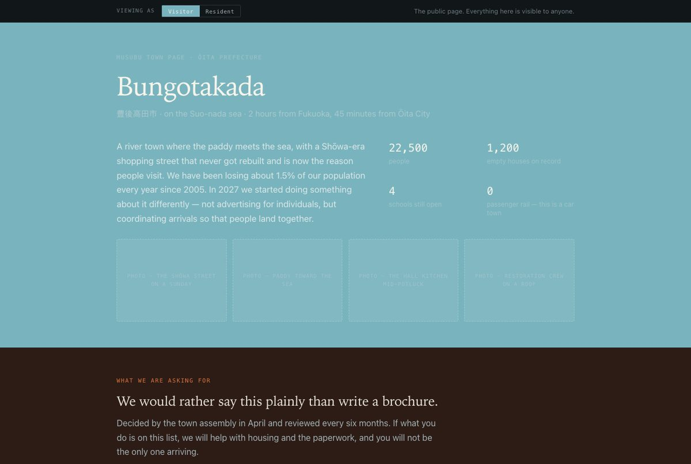

Illustrative. Kamisato is not a real town and none of these numbers are real. The shape of the
screen is the idea: you can see who else is going before you decide, and nobody moves unless
enough people do.
This is a concept for how people could move to Japan's emptying towns together instead of
alone. It was worked out in detail by one person over about eighteen months, and it is online
so that anyone can read it, take it, or build it.
Work in progress. This is a living folder, not a finished thing. Documents change, numbers get corrected, and the open questions are open.
イメージ画像（AI生成、2026年8月）。実在の建物ではありません。 · Illustration, AI-generated. Not a real building.
今、本当のこと What is true
あるもの · Exists
人がなぜ引っ越し、なぜ引っ越さないかについての仮説A thesis about why people do and do not relocate
仕組みの設計。どの部分もどこまでわかっているかの印つきA specified mechanism, every part labelled by how much is known about it
公開情報から調べた、最初の候補地A candidate first town, studied from public sources
経済、住まい、協同組合のモデル。前提は明記Economics, housing and co-op models with their assumptions marked
主要な数字をすべて根拠で等級づけした一覧A register that tiers every load-bearing number
15の試作画面Fifteen prototype screens
ないもの · Does not exist
調査の回答者、一人もA single survey respondent
何かに合意した町A town that has agreed to anything
会社、チーム、資金A company, a team, or funding
裏付けのある改修の人件費A verified renovation labour cost
預り金についての法的な見解A legal opinion on holding deposits
どの画面の「初日版」もA day-one version of any screen

試作の町ページ。数字はすべて例です。開く（英語） · Screenshot of a prototype town page, illustrative throughout.
持っていってください Take it
これを考えた人は、自分のものにするより、存在してほしいと思っています。このサイトと、その裏にあるフォルダの中身はすべて、出典を示せば誰でも使い、変え、その上に作ってよいものとして公開しています（CC BY 4.0）。
The person who made this would rather it existed than owned it. Everything on this site and
in the folder behind it is released for anyone to use, adapt, or build on, with credit to the original (CC BY 4.0).